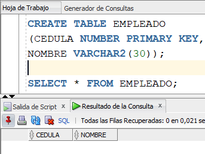

Por diferentes motivos, en ocasiones, es importante poder consultar qué movimientos se han hecho dentro de la base de datos. Además, saber algunos datos importantes de estos movimientos: quién los hizo, cuándo fue hecho, etc. A esto es lo que conocemos como Auditoría de la Base de Datos. Oracle implementa esta auditoría. Vamos a ver a continuación de qué manera lo hace.
En Oracle existen tres tipos de auditoría:
- Auditoría de Bases de Datos
- Auditoría de Objetos
- Auditoría de Granularidad Fina
Para que Oracle grabe los registros de auditoría, debe tener el parámetro “audit_trail” activado. Por defecto, dicho parámetro, en el campo VALUE, tiene el valor NONE. Cuando está en NONE, la auditoría está desactivada. Para consultar si la auditoría está activada o no, se ejecuta el siguiente comando y se revisa el valor de la columna VALUE. En este caso, vemos que la auditoría está deshabilitada. Para activar la auditoría, modificamos el valor de dicho parámetro con ALTER SYSTEM.
Y se debe reiniciar el servidor (shutdown / startup) para que tome efecto el cambio.
Auditoría de Base de Datos
La vista que contiene las trazas de auditoría es SYS.AUD$. En este momento, dicha vista se encuentra vacía, ya que acabamos de activar la auditoría. Para hacer el ejercicio, se va a crear el usuario llamado USER200 y se le dará el rol de DBA.
Para auditar los SELECTs e INSERTs que haga el usuario USER200, ejecutemos lo siguiente. La cláusula BY ACCESS es para decirle a Oracle que por cada acción auditada, grabe el registro de auditoría. También podemos mirar qué instrucciones se le van a auditar al usuario USER200.
Vamos a conectarnos con el usuario USER200 y vamos a realizar un SELECT sobre una tabla de su esquema. Es decir, primero creemos una tabla, llamada EMPLEADO, en el esquema de USER200 y luego le hacemos SELECT. Vamos a comprobar que la sentencia SELECT, hecha por USER200, haya quedado registrada en la vista DBA_AUDIT_TRAIL.
|  |
Se puede ver que queda grabada, en la vista de auditoria, el hecho de que el usuario USER200 hizo un SELECT sobre la tabla EMPLEADO.
En este tipo de auditoría no queda registrada la instrucción SQL completa que dio pie para el registro de auditoría, solamente dice que instrucción se ejecutó (INSERT, SELECT, etc.).
Ahora, hagamos la prueba insertando datos desde el usuario USER200. Se observa que se grabaron dos trazos de auditoría, correspondientes a los dos INSERTS que hizo el usuario USER200.
Si queremos desactivarle al usuario USER200 la auditoria sobre la instrucción SELECT, se ejecuta la siguiente instrucción. La auditoría, para ese usuario, queda desactivada a partir de la proxima conexion .
Para comprobar que ya no se le va a auditar los SELECTs al usuario USER200, ejecutamos la instrucción siguiente (derecha):
Auditoría de Objetos
La Auditoría de objetos, registra los cambios por operaciones efectuadas por los usuarios en determinadas tablas.
Miremos un ejemplo para entender el concepto. Para hacer el ejercicio, vamos a activar la auditoria relacionada con las acciones SELECT, INSERT y UPDATE, sobre el objeto USER200.EMPLEADO. Luego consultemos los objetos auditados. Se puede observar que se tiene activada la auditoría en las cuatro operaciones del CRUD.
Creemos un nuevo usuario, llamado MATEO1, con permisos de hacer consultas e inserciones sobre la table EMPLEADO de USER200. Luego de esto, con el usuario MATEO1, insertar datos en EMPLEADO y consultarlos.
Miremos como quedó grabado el registro de auditoría sobre el objeto USER200.EMPLEADO, por parte del usuario MATEO. Podemos observar que el registro de auditoría nos dice que el usuario MATEO le hizo dos INSERTs y un SELECT a la tabla EMPLEADO, del esquema USER200. Además, dice la fecha y hora en que se hicieron las operaciones.
Para desactivar todas las opciones de auditoría que tenemos configuradas, ejecutamos el comando NOAUDIT ALL ON DEFAULT.
Auditoría de Granularidad Fina
Si queremos que la auditoria hecha por Oracle grabe la instrucción SQL completa ejecutada por un usuario, utilizamos este tipo de auditoría.
En el ejemplo que vamos a desarrollar se auditan las sentencias INSERT, UPDATE, DELETE, y SELECT en la tabla USER200.EMPLEADO, controlando cualquier acceso a la columna APELLIDO pertenecientes a los empleados con apellido GOMEZ. Para ello, a la tabla EMPLEADO le debemos adicionar el campo APELLIDO. Y vamos a cerciorarnos de que algunos de los empleados grabados en la tabla tengan el apellido GOMEZ.
Este tipo de auditoría se activa, creando una política, tal y como se ve en la imagen. La política dice que se active la auditoría del CRUD en la tabla EMPLEADO del esquema USER200, pero solamente cuando el valor del campo APELLIDO es GOMEZ.
Observar que se ejecuta un procedimiento de Oracle llamado DBMS_FGA (FGA: Fine Granularity Audit).
Ahora, desde otro usuario que tenga permisos (MATEO), vamos a insertar dos nuevas tuplas en la tabla EMPLEADO, una tupla de un empleado cuyo apellido es GOMEZ, y otra tupla con un empleado de apellido LOPEZ.
Luego de eso, consultemos los datos de la auditoría de granularidad fina.
Como podemos apreciar, la instrucción INSERT del empleado GOMEZ quedó registrada en la auditoria, mas el del empleado de apellido LOPEZ no quedó registrado. Y se puede observar que la instrucción INSERT completa queda registrada en el campo SQL_TEXT de la vista DBA_FGA_AUDIT_TRAIL.
Se llama auditoría de granularidad fina porque entrega muchos mas detalles acerca de las instrucciones ejecutadas: cuándo se ejecutó, qué usuario la ejecutó, desde qué equipo se ejecutó, a través de qué política se grabó, etc.
Si queremos eliminar la política de auditoría anterior, ejecutamos lo siguiente:
Por último, es conveniente mencionar que para manejar la auditoría, Oracle maneja varias vistas del catálogo. La explicación de dichas vistas son mostradas a continuación y son extraidas de http://www.dba-oracle.com/t_dba_audit_trail.htm